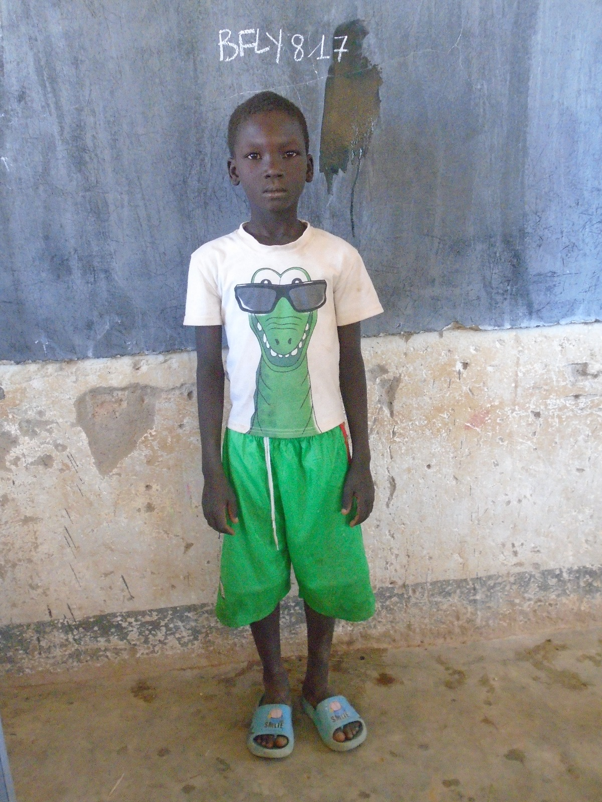
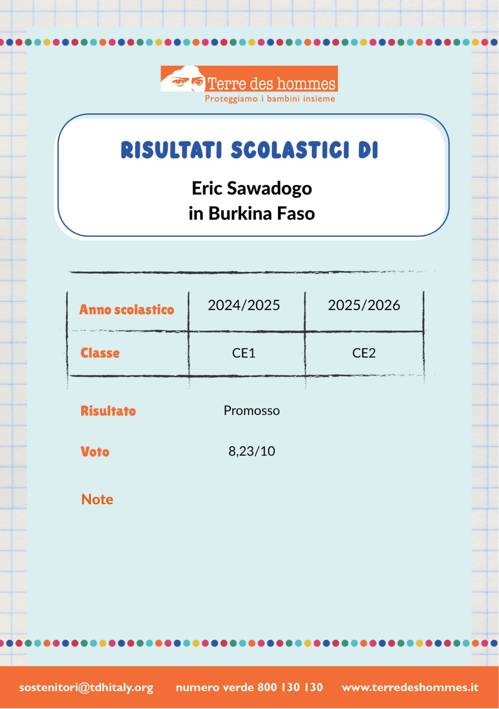
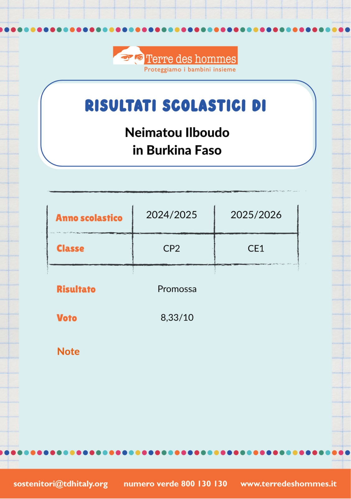
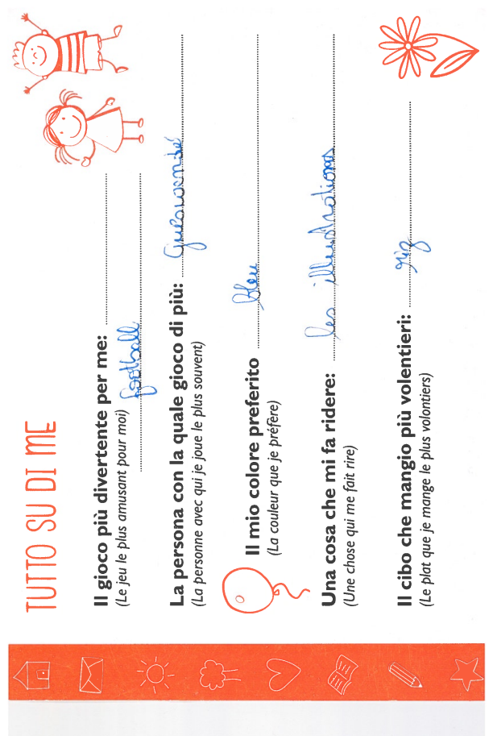
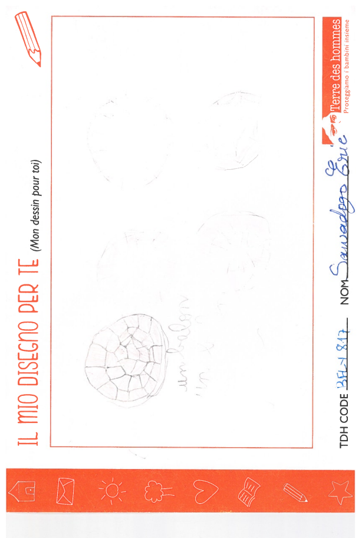
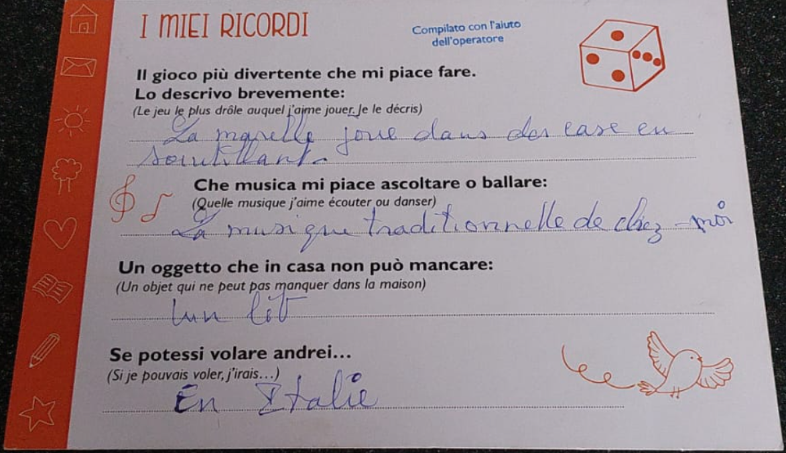
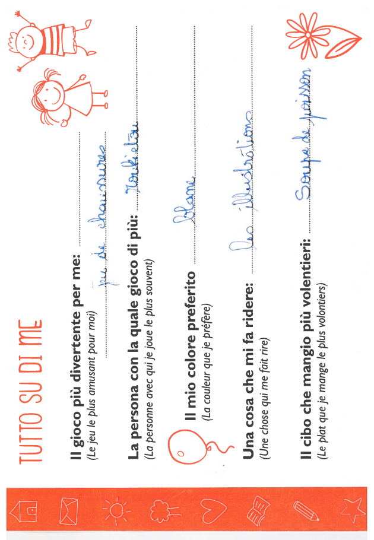
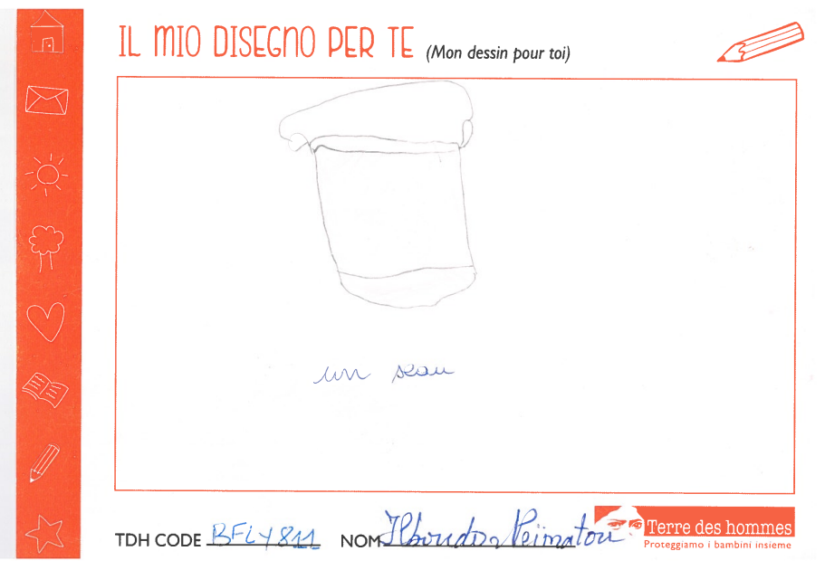
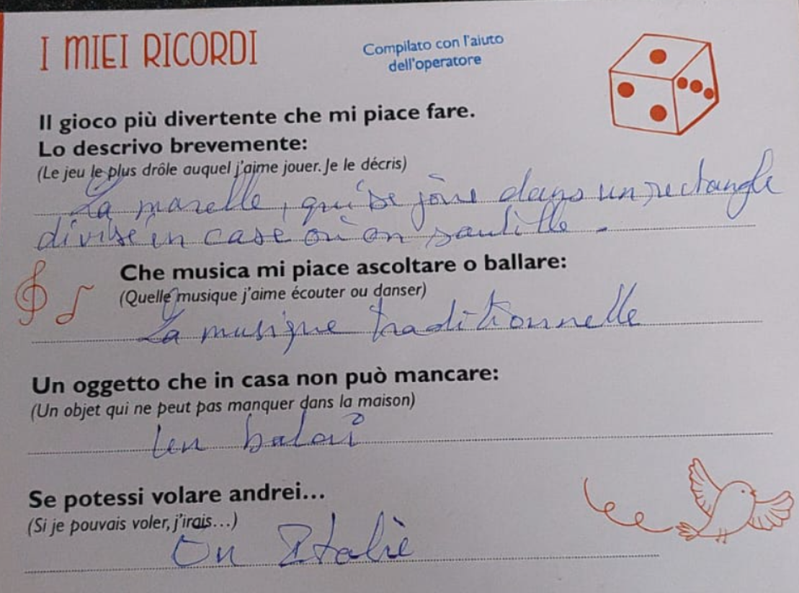

Una piccola scelta che per loro significa un grande futuro.
Qui vogliamo raccontare l’inizio di questo cammino insieme.
Abbiamo scelto di intraprendere il percorso dell’adozione a distanza per dare un
aiuto concreto a due bambini che, pur vivendo lontano, sentiamo già parte
della nostra famiglia allargata.
Con il nostro sostegno potranno continuare a studiare, ricevere cure adeguate
e crescere in un ambiente più sereno. Questa pagina è il nostro modo per
fermare nel tempo l’emozione di questo incontro speciale.
Ogni foto, ogni disegno che ci mandano è un piccolo ponte tra la loro vita e la nostra.
Il bambino
Eric Sawadogo
7 anni

È un bambino vivace e curioso, con tanta voglia di imparare e di giocare.
Grazie all’adozione a distanza potrà continuare a frequentare la scuola,
avere il materiale scolastico di cui ha bisogno e partecipare alle attività del centro.
Nei suoi primi messaggi ci ha raccontato dei suoi desider e delle sue passioni, soprattutto di quanto gli piaccia
giocare a calcio: speriamo di poterlo aiutare anche in questo suo sogno!
La bambina
Neimatou Ilboudo
6 anni
È una bambina dolce e determinata, con un grande sorriso e un mondo di colori
nei suoi quaderni. Con il nostro aiuto potrà continuare a studiare,
ricevere assistenza e crescere circondata da persone che si prendono cura di lei.
Manifesta spesso il desiderio di viaggiare e di venire in Italia a incontrarci.
La stessa voglia di vederla pervade anche noi. Non vediamo l'ora di abbracciarla!
Le loro pagelle scolastiche
Una delle gioie più grandi dell’adozione a distanza è vedere i loro progressi
a scuola: ogni risultato rappresenta un passo in più verso un futuro migliore.
Qui raccogliamo alcune pagine delle loro pagelle, che ci riempiono di orgoglio.
Pagella di Eric

I risultati ottenuti a scuola mostrano il suo impegno e la sua curiosità.
Ama imparare cose nuove e si impegna per ottenere sempre il meglio.
La pagella testimonia i suoi progressi e la passione che ha per lo studio.
Pagella di Neimatou

Ogni voto è il risultato della sua tenacia e della voglia di crescere.
Con grande determinazione si applica ogni giorno per raggiungere i suoi
obiettivi scolastici. La pagella è la prova dei suoi progressi.
I disegni che ci hanno mandato
Oltre alle pagelle, in questo primo periodo abbiamo ricevuto i loro disegni e le loro lettere: piccoli capolavori che
parlano della loro quotidianità, dei sogni e delle cose che amano. Qui ne
raccogliamo alcuni.
Corrispondenza di Eric

Eric si racconta.

Un pallone: la sua più grande passione, uno strumento così semplice che fa appassionare tutti da generazioni.

Passioni e desideri di Eric.
Nei suoi disegni spesso compaiono campi, palloni e amici: il suo modo
di raccontarci le giornate e ciò che lo rende felice.
Corrispondenza di Neimatou

Neimatou si racconta

Il gioco preferito di Neimatou

Vita quotidiana e desideri di Neimatou
Nei suoi disegni ci manda spesso simboli di affetto e speranza: un modo
semplice ma profondissimo per dirci grazie e sentirsi più vicina a noi.